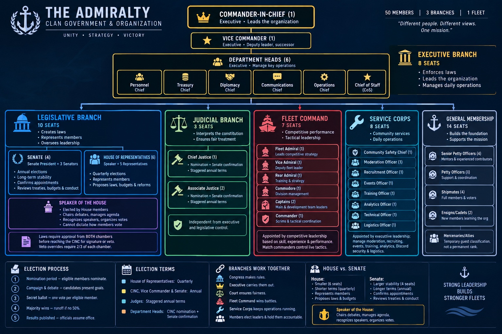
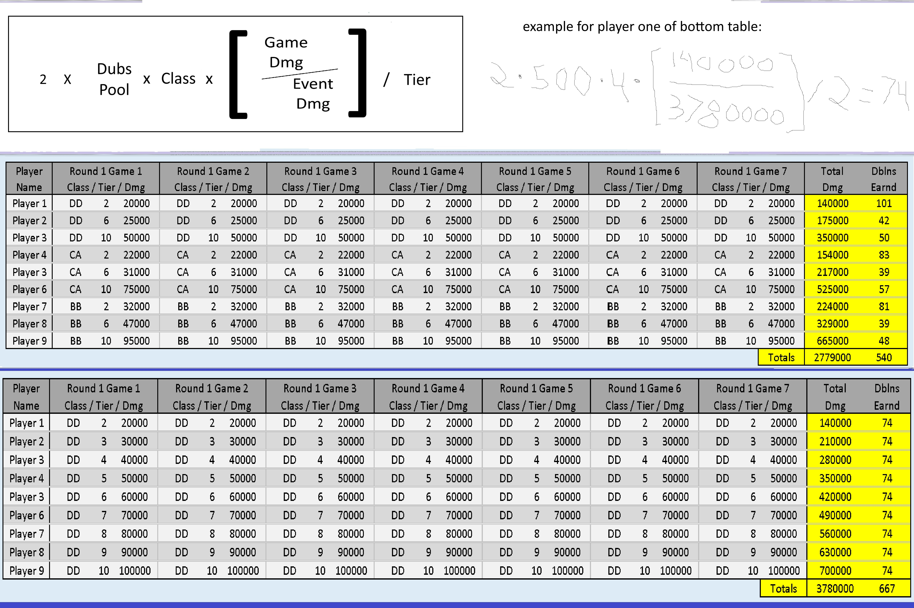
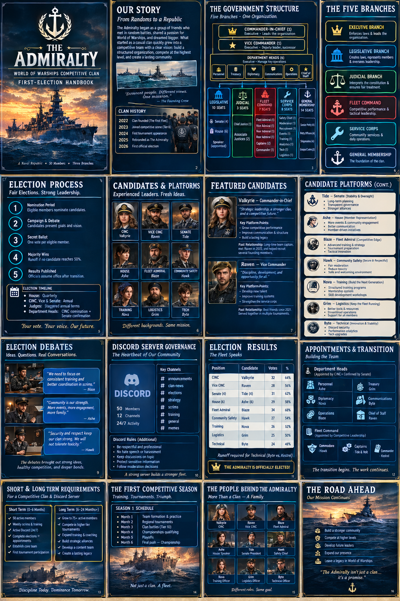
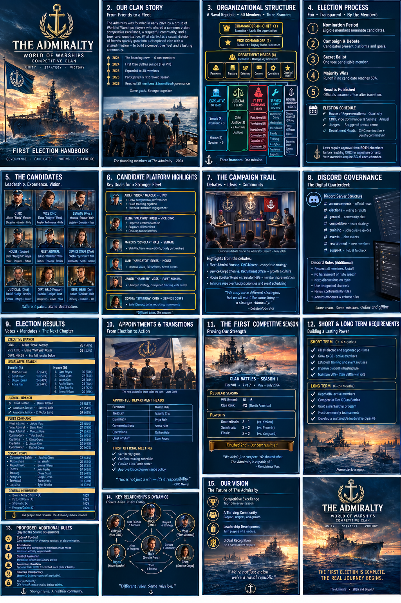

One fleet, six responsibilities
The Admiralty handbook's fictional fifty-position clan is organized to keep policy, live command, member voice, dispute review and service work distinct. The tournament borrows that architecture; it does not inherit a fifty-player cap.

Executive · Rowan “Anchor” Pierce
Event director, calendar, approvals and official notices. Rowan wants a process that can be explained before and after a match.
Legislative · Ava “Chartroom” Keene
Member questions, rule proposals and budget review. Lucas “Soundings” Chen and Elena “Sparrow” Cruz make the process accessible.
Judicial · Selene Ward
Independent review of disputes and appeals. Rhea “Crosswind” Patel tests the count without being treated as a troublemaker.
Fleet Command · Victor “Spear” Moreno
Training, doctrine, caller development and live tactical command. Match commanders call the battle; they do not adjudicate their own disputes.
Service Corps · Mira “Valkyrie” Solano
Events, safety, moderation, recruitment, training, analytics, technical support and logistics keep the tournament running.
General Membership
Participants, mentors, volunteers and developing players. The system should give every entrant a clear route to contribute.
“Wins move the bracket. Damage moves the individual awards. Record both, and never confuse one with the other.” — Rowan, fictional dialogue
Pilot night: learn the room before the season
The supplied Pilot source describes a drop-in rehearsal: no prior registration, entry closes one hour before play, and final lineups are announced thirty minutes before games. Rooms are planned for six humans and six bots; when fewer humans attend, the bot count mirrors the human count. Training Rooms and visible lineups are used.
Before ready-up
Confirm the game ID, map, mode, duration, side assignments, lineup and observers. Both representatives check independently. A mismatch goes to the referee before the room starts.
After the battle
Save the original readable result screenshot. Verify the player, result and damage. DWBOT also requires all nine record fields: result, player, map, mode, battleStart, credits, freeXp, damage and xp.
“If the room is wrong, we stop before ready-up. We do not improvise a new rule after the battle.” — Elias “Wake” Mercer, fictional dialogue
Three rounds. New crew every week.
| Stage | Source format | What decides the next step? |
|---|---|---|
| Round 1 | Bot match; source describes 2v6, with a later note allowing 3v9 depending on turnout. First-come-first-served seeding. | Verified match win/loss advances the bracket. |
| Round 2 | Mixed human/bot teams, described as 6v6 or 9v9, with two or three humans per side. | Wins seed later pairings; random weekly draft assigns teammates. |
| Round 3 | Mixed human/bot teams; third-place/consolation bracket keeps teams playing. | Verified match outcome controls advancement; individual damage remains separately recorded. |
Each participant is expected to play about seven games. The recurring source estimates ten-minute battles, ten minutes between matches for reporting, fifteen-minute breaks between rounds and a two-to-three-hour evening. Exact event timings are set in the published notice.
See first. Call clearly. Push together.

Vision & information
Spot approaches, share positions, and preserve concealment. Information matters when allies can act on it.
Focus fire
Call one target and a firing window. A spotted ship under coordinated fire matters more than several ships taking unrelated shots.
Crossfire
Use a second angle to make the enemy turn or retreat. Do not flank so far that your guns arrive after the fight.
Push or hold
Push with local advantage, support and an exit route. Hold when ahead and controlling objectives; force the opponent to move first.
Adapt roles rather than copying Tier X hulls: scout/vision, objective contest, anchor/fire support, crossfire support, caller and reserve. Radar, hydro, smoke and other consumables are ship-specific; use them only when the legal ship actually has them.
A twelve-stage route, not a booked calendar
Preparation & Pilot
Rehearse room setup, identity mapping, evidence intake, scoring review and closeout.
Baseline weeks
Run the first fixtures, learn the random draft and establish the weekly score ledger.
Mid-cycle & Race weeks
Review replays and role coverage. The recurring source describes a separate Race for the lower half of cumulative damage standings every third week.
Competitive push
Use verified wins for bracket advancement; preserve damage awards and cumulative standings as separate records.
Playoffs & Grand YOLO
Only after qualification, bracket and finale settings are approved; close with verified placements, awards and an archive.
| Week | Map label from source | Note |
|---|---|---|
| 1 | Islands | Standard Battle baseline |
| 2 | Polar | Standard Battle baseline |
| 3 | Big Race | Map name; separate Race side-event also appears in the template |
| 4 | Archipelago | Standard Battle baseline |
| 5 | Ring | Standard Battle baseline |
| 6 | Straight | Race side-event template |
| 7 | New Dawn | Standard Battle baseline |
| 8 | Islands | Standard Battle baseline |
| 9 | Polar | Race side-event template |
| 10 | Big Race | Map name, not the side-event |
| 11 | Archipelago | Standard Battle baseline |
| 12 | Ocean | Grand YOLO + Race listed; special mode and duration unresolved |
The Admiralty handbook's ten-week clan-development arc is used only as a storytelling framework: preparation, baseline, mid-cycle, competitive push and review. It does not replace the YOLO source's candidate twelve-stage sequence.
Make every number explain itself
Four outputs must stay distinct: battle result, bracket result, individual event score, and award/cumulative damage standing. The supplied workbook is an archival example, not the designated canonical workbook. These formulas explain the historical sample and support regression tests; they do not certify live awards or a live match-outcome formula.
Damage & Kills — historical sample
Sample defaults: pool 500, multiplier 1, tier power 1; DD=4, CA=3, BB=2. For a DD at tier 2 with 20,000 damage and 1,000,000 event-wide damage: 2 × 500 × [4 × (20,000 / 1,000,000) / 2] = 40 Doubloons for that game. Seven equal games produce 280.
Race — current C01 policy
The archival workbook uses raw elapsed seconds and therefore rewards slower times. DWBOT policy C01 uses inverse seconds so lower time scores better. The DWBOT engine and HTML calculator have been changed to inverse time; exact-head CI must verify parity before the implementation is called passed.
Grand Yolo — historical sample formula
The sample uses Grand tier weight 0.9 and other Grand weights 1. The Grand pool cell is not used by the observed formula. The historical dollar conversion 0.54 × Doubloons / 100 is not an official Wargaming value or prize promise.

Earn the bracket. Then sail the final.
The supplied recurring YOLO rules describe weekly bracket advancement and a cumulative-damage-seeded Grand YOLO bracket. They do not fully define a separate regular-season playoff field, qualification threshold, bracket type or series length.
Proposed playoffs
Current planning proposal: top eight eligible entrants, minimum six of twelve regular-season events, seeds 1–8, single elimination, quarterfinals and semifinals best-of-three, championship best-of-five, third-place match best-of-three. All are proposals until ratified.
Grand YOLO finale
A separately configured closing event. Wins determine bracket advancement; cumulative damage determines individual damage placement under the approved formula. Publish entrants, room format, maps, mode, series length, prizes and evidence route in advance.
“The record must show what happened, the formula must show how it was counted, and the notice must show what we agreed to before battle.” — Ava “Chartroom” Keene, fictional dialogue
Clear channels. Clear ownership.
The Admiralty source treats Discord as the community's command room and record of decisions. The YOLO source uses it for registration, voice coordination, score reporting and help. A future channel map could include announcements, events, registration, competitive, training, score-reporting and support. These are proposed names, not a statement that such channels already exist. The current DWBOT intake is configured around one designated channel; any multi-channel design requires a separate implementation and permission review.
| Role | Event-night responsibility |
|---|---|
| Event director | Approves settings, calendar, notices and exceptions |
| Room host | Creates room, checks map/mode/lineup, invites opponent and approved streamers |
| Team representative | Confirms roster, readiness and team communications |
| Referee | Handles room faults, attendance, restarts and disputes |
| Scorekeeper | Links evidence to participant/game IDs and verifies accepted values |
| Participant | Uses correct identity, plays assigned game and submits original evidence |
Know which chart you are reading
The Admiralty PDF supplies the fictional cast and governance story. The CBStrat PDF supplies Tier X Clan Battles tactics. The YOLO rules and Pilot documents supply the event formats. Discord messages are short summaries; the archival workbook is a sample, not the canonical scoring authority.
Supplied sources

